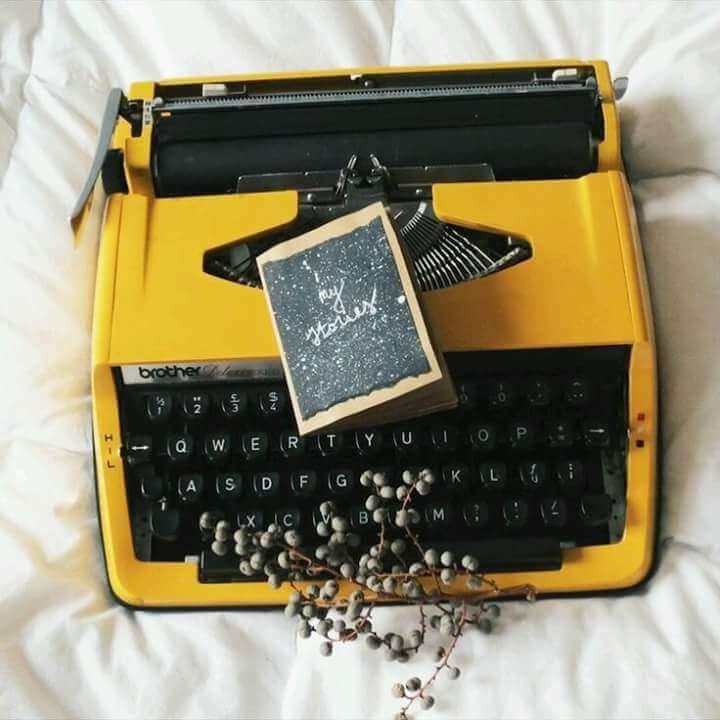

¡Hey hey!
Soy la persona detrás de las palabras.
¿Cómo acabé aquí?
Años atrás pertenecía al grupo de personas que creía que los libros
eran aburridos.
No fue sino hasta que me vi forzada a leer Los Juegos del Hambre
para un trabajo de la escuela,
que me di cuenta de lo fantásticos que son.
Tardé bastante en atreverme a contar mis propias historias.
Sin embargo, en 2018 algunos personajes comenzaron a dar vueltas por
mi cabeza, consiguiendo que finalmente decidiera darle una
oportunidad a la escritura.
Y no pude despegarme de ella desde entonces.